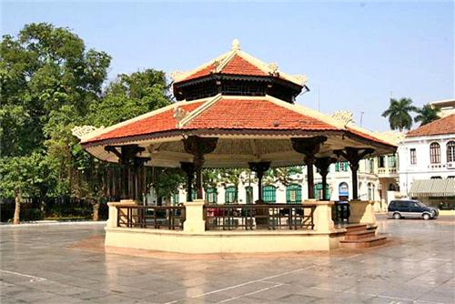

CHƯƠNG III

hững tháng còn lại của niên học vừa đủ để cho tôi làm lại cuộc đời. Khi đã rũ bỏ hoàn toàn ý định làm báo thì đầu óc của tôi trở nên thảnh thơi để chỉ lo chuyện học hành. Ngoài ra, còn một động lực nữa đã ám ảnh tôi trong suốt cuộc đời về sau này. Đó là một chuyện tuy cỏn con nhưng đã gây mãi cho tôi nhiều âm hưởng xúc động.
Vào tháng cuối cùng trước khi rũ bỏ ý định làm văn nghệ, điểm trung bình cuối tháng của tôi trong lớp đã suy sụp một cách thảm hại. Bài học thường chỉ 1, 2 trên 10. Bài làm không lên tới 5 điểm để được trung bình. Riêng hai bài toán của tuần lễ thứ ba và thứ tư thì tôi đã lãnh hai quả trứng vịt một cách không oan uổng chút nào vì có đi học mà không nộp bài. Đó là kết quả của những ngày chỉ mơ tưởng đến chuyện viết bài, chép bài và lụi hụi với những dụng cụ ấn loát lỉnh kỉnh. Khi xếp hạng vào cuối tháng, tôi đứng hạng 51 trên 52 người, hơn được đúng có một anh, không vẻ vang gì vì anh ta ốm liền một tuần, do đó không đủ điểm để xếp hạng!
Buổi tối hôm đó, tôi hết sức lo lắng khi nghĩ đến lúc phải trình sổ cho Ba tôi để xin chữ ký. Tôi không dám ra phố sau bữa cơm chiều để sẵn sàng có mặt khi Ba tôi trở về. Tối hôm ấy, ông về trễ hơn mọi ngày. Trông ông đầy vẻ mệt mỏi. Có lẽ ông đã gặp nhiều chuyện khó khăn ở sở làm. Khi ông đi qua cái sân gạch rộng không đầy ba thước, lần đầu tiên tôi nhìn ông kỹ càng qua khung cửa sổ ở bàn học. Quần áo của ông tuy tươm tất nhưng không giấu được vẻ nghèo nàn. Vẫn cái quần tây sờn gấu mầu xanh nhạt, vẫn cái áo veston rộng thùng thình mầu nâu xám đã bạc phếch sau bao ngày dầu dãi. Tôi vụt nhận ra rằng hình ảnh bộ quần áo ấy đã in sâu vào trí nhớ của tôi không biết bao nhiêu năm trời đã trôi qua. Nó quen thuộc đến nỗi tôi không còn chú ý đến nó nữa.
Ông không có nhu cầu. Nói đúng ra, ông không hề nghĩ đến nhu cầu cho riêng mình, dù chỉ là may một cái quần mới, một cái áo mới thay cho bộ đồ đã cũ kỹ từ bao nhiêu năm. Ông già đi hơn là hình ảnh quen thuộc vẫn lưu lại trong ý nghĩ hằng ngày của tôi. Tuổi già làm trán của ông như sói thêm ra, những lớp nhăn hai bên má như làm khuôn mặt của ông thêm dúm lại, và đôi vai gầy guộc của ông như càng nhô thêm cao hơn sau lần áo rộng thùng thình. Ông đi những bước mệt mỏi qua sân gạch. Đầu của ông cúi thấp. Hai ống quần rộng của ông không đủ che lấp hai mũi giầy thật to, thật thô mà tôi nhớ hồi năm ngoái, khi ông đem về, bọn trẻ ngu dại trong nhà tôi đã reo lên chế giễu:
- A… Giầy mõm nhái…Giầy mõm nhái…
- Ba chọn giầy gì mà nom kỳ khôi quá, thế hở Ba…
Ông không đáp lại đứa nào mà chỉ mỉm cười. Bây giờ hình dung lại, tôi mới cảm thông được nỗi chua xót của ông qua nụ cười ấy. Rồi hồi lâu, ông giải thích:
- Chú Minh thải cho Ba đấy. Nom nó thô một tí nhưng còn tốt chán!
Lúc ông xỏ thử hai bàn chân vào đôi giầy, cả bọn chúng tôi cười vang lên. Bàn chân của ông nhỏ quá. Lòng giầy lại quá to. Thằng em của tôi nói rằng "chân của Ba bơi được trong đôi giầy".
Sau này ông đã sử dụng đôi giầy ấy với một mớ giẻ nhét vào bên trong. Và bây giờ, trước mắt tôi, ông đang lê đôi giầy qua sân gạch với vẻ mệt mỏi. Trong một giây thoáng qua, tôi vụt nhìn thấy tất cả sự hy sinh vô bờ bến của ông cho đàn con dại sớm mồ côi mẹ là chúng tôi. Sự hối hận vì đã bê tha, thả lỏng sự học trong mấy tháng trời qua làm tôi rưng rưng muốn khóc. Tôi muốn chạy ra ôm chầm lấy ông để mà tạ lỗi, nhưng sự lầm lì, mệt mỏi của ông khiến tôi trở nên rụt rè.
Lúc ông đi qua bàn học, tôi chào ông: "Thưa Ba đã về", ông không nhìn tôi mà chỉ khẽ gật đầu, miệng ông hầu như muốn nhích một nụ cười, nhưng vành môi khô héo chỉ khẽ rung động rồi thôi.
Suốt buổi tối hôm ấy, Ba tôi lầm lì không nói với ai một câu. Bầu không khí trong nhà mang một vẻ u uất, buồn chán. Thật là xui xẻo cho tôi vô cùng, vì cứ với cái đà này thì làm sao tôi có thể đẩy trôi được công việc ký Học Bạ với cái thành tích khủng khiếp nhất so với tất cả mọi tháng kể từ đầu niên học đến giờ.
Sau bữa cơm tối, ba tôi ra ngồi đọc báo trên ghế xích đu. Lũ em tôi quây quần bên bàn học. Hôm nay chúng nó có vẻ nhộn nhạo dữ. Hết đứa này gây gổ, chành chọe lại đến đứa kia quai mồm ra khóc. Hẳn nhiên cái bầu không khí om sòm, ngậu sị đó dễ khiến cho người lớn bực mình. Tôi thì lại càng bực mình hơn vì đang rình một cơ hội thuận tiện trong đó cả nhà đều vui vẻ để nuốt cho xong cái màn "ký Học Bạ" gai góc này.
Cuối cùng khi Ba tôi buông tờ báo xuống để sửa soạn đi ngủ thì tôi đành phải làm mặt chai lì, đẩy bảng phiếu điểm hằng tháng ra trước mặt ông. Trống ngực tôi đập thình thịch. Tôi không rõ ông sẽ phản ứng thế nào khi biết tôi "đội sổ" cho cả lớp. Ông bợp tai tôi chăng? Hay là ông nọc tôi ra, phết cho một đòn nên thân như mẹ Hòa đã từng làm với hắn.
Nhưng bao nhiêu dự đoán của tôi đều sai hết cả. Ông đã đón lấy bản phiếu điểm của tôi để xem một cách kỹ lưỡng. Cuối cùng ông ký tên một cách lẹ làng, không hỏi một câu, không phiền trách một tiếng, cũng không thèm nhìn xem cái bản mặt của thằng con trai ông đã tồi tệ đến mức nào để mà phải nhận lãnh cái kết quả nhục nhã như vậy.
Thái độ ấy của ông đã xác nhận rằng tôi là một thứ bất trị, hết thuốc chữa, khỏi cần khuyên bảo chi nữa cho mất công. Hẳn là ông giận tôi lắm nhưng ông không biểu lộ ra bên ngoài. Tôi chỉ cảm thấy ông buồn nhiều hơn là giận. Mỗi lúc buồn, khuôn mặt của ông như nhăn nhúm thêm, cằn cỗi đi, và ông bỏ lên giường nằm, ngửa mặt lên trần nhà hút thuốc liên miên.
Về phần tôi, suốt đêm hôm ấy tôi đã thao thức. Tôi có cảm giác như ở giường bên, Ba tôi cũng đang trằn trọc. Tôi nằm lắng nghe từng tiếng động nhỏ nhặt ban đêm. Một vài con chuột nhắt chút chít kêu sau bàn thờ của mẹ tôi, tiếng nói mê lảm nhảm ở bên giường các em tôi, và lâu lâu có tiếng Ba tôi thở dài. Trong đêm vắng, tôi có dịp duyệt xét lại tất cả việc làm của tôi đã qua. Tôi nhớ lại được cả trách nhiệm của tôi là phải làm gương mẫu cho lũ em còn thơ dại đi sau. Việc học hành của tôi chắc chắn sẽ có ảnh hưởng đến chúng nó. Nếu tôi khá hơn, tất chúng sẽ noi gương mà học hành chăm chỉ. Còn nếu cái đà xuống dốc như hiện tại, chỉ một thời gian sau, chúng nó cũng chẳng ra gì.
Tôi vụt bừng tỉnh như một kẻ vừa được dẫn dắt qua khỏi vòng tăm tối. Tôi tự hứa sẽ phải cố gắng thật nhiều hơn, giũ bỏ mọi đam mê hay những thú vui tầm phào để chỉ lo lắng cho việc học hành. Tôi sẽ bắt đầu làm lại cuộc đời từ ngày mai. Không văn chương, báo bổ gì nữa. Tôi sẽ bắt kịp các bạn tôi trong tháng tới. Và kỳ thi cuối năm (hồi đó còn có kỳ thi Tiểu Học Tốt nghiệp) cũng chẳng còn bao xa. Tôi sẽ chuộc lại lỗi lầm hôm nay bằng việc làm cụ thể. Tôi sẽ thi đậu để cho ba tôi được vui lòng. Và hơn thế nữa, tôi sẽ cố gắng để thi đậu vào trường Chu văn An vì được thế thì ngân khoản gia đình khỏi tốn kém thêm tiền ra ngoài học trường tư.
Những ngày tiếp theo đó, tôi đã vùi đầu vào việc học. Trước, thì như là một bổn phận, nhưng càng về sau, tôi lại càng thấy đó là một công việc cũng có sự say mê. Một bài toán khó, moi óc để tìm ra được lối giải thì cũng thỏa mãn được tính hiếu thắng mà từ đó sẽ vun đắp thành sự say mê. Hòa cũng như bị lôi cuốn vào luôn sự say mê đó và khi giao hữu với tôi thì hắn đã mang cả tính chất ganh đua nữa. Chì khác một điều là hồi xưa thì hai đứa ganh đua nhau về một bài sáng tác nhanh hay chậm, dài hay ngắn, hay hoặc dở. Nhưng bây giờ thì chúng tôi thách đố nhau về những bài toán khó.
Có tiền trong túi, chúng tôi không còn chi ra để mua truyện Tầu nữa, mà gom lại để mua sách Toán như những cuốn 380 Bài Tính Đố, Tính Đố Luyện Thi Tiểu Học, Giải Những Bài Tính Khó..v..v..Thậm chí gặp cuốn sách hay mà không đủ tiền, tôi và Hòa phải đem truyện cũ đi bán cho các nhà cho thuê truyện. Tôi còn nhớ cuốn Thủy Hử 72 số, mua gom từng số thành 72 đồng, đem bán chỉ 30 đồng. Cuốn Thất Quốc Chí 18 số, bán 9 đồng, cuốn Tây Du hơn 100 số, Hòa bán 60 đồng. Nói chung toàn là giá nửa tiền. Với tiền bán được, tủ sách học và luyện thi của chúng tôi dồi dào phong phú hẳn lên. Hầu như bao nhiêu loại toán khó thời đó, chúng tôi đều thu thập được hết và đã làm qua. Chúng tôi đã tiến bộ một cách không ngờ!
Gần tới kỳ thi, thầy Huỳnh bắt chúng tôi đi học sớm thêm 1 giờ để chuyên luyện Toán và Luận. Hồi này thầy càng dữ đòn thêm đối với những đứa lười biếng. Nhưng giờ nghĩ lại, tôi mới thấy lòng thầy đối với học trò thật bao la. Nhà thầy ở tuốt dưới khu Bạch Mai, coi như ngoại ô Hà Nội. Giữa trưa nắng, thầy đạp xe đi dạy học từ hơn 12 giờ. Tới lớp, cả trường còn vắng hoe, chỉ riêng có lớp của thầy là đã bắt đầu học. Thầy giảng bài rất tỉ mỉ và tận tâm. Thầy có tâm trạng lo lắng như một bà mẹ sắp sửa phải đẩy đàn con vào cuộc đời mà vẫn áy náy chúng nó chưa đủ lông, đủ cánh. Vì thế dù mệt mỏi, tốn sức bao nhiêu, thầy cũng vẫn không quản ngại. Miễn sao lũ học trò ra khỏi tầm tay của thầy, đứa nào cũng có một căn bản vững vàng như ý thầy mong mỏi.
Công trình khó nhọc của thầy trong suốt 3 tháng trước nghỉ hè quả đã không uổng một chút nào.
Kỳ thi Tiểu Học năm đó, cả trường Nguyễn Du chỉ rớt có vài chục người. Riêng lớp của thầy Huỳnh chỉ rớt có 5 người. Đó là một thành tích đáng nể!
Rồi vào đến kỳ thi tuyển lớp Đệ Thất ở trường Chu Văn An, lớp của tôi có tới 28 người đỗ. Đó lại là thêm một thành tích và vinh dự khác nữa vì tỷ lệ học sinh được vô lớp Đệ Thất trường công rất ít oi. Có cả vài ngàn thí sinh mà số học sinh được tuyển vô chỉ hơn 700 người. Tôi còn nhớ Hòa đậu hạng 69 được xếp vào lớp 7 B2, còn tôi đậu hạng 320, được xếp vào lớp 7 B5.
Thế là ở niên khóa bước vào ngưỡng cửa của bậc Trung Học, tôi và Hòa phải chia tay.
***
Trường Chu văn An năm đó còn nằm ở phố Hàng Bài, phía sau trường, có cổng ra vào rất rộng thì nhìn ra đường Rolland, nay là đường Lý Thường Kiệt. Thông thường chúng tôi toàn đi vào trường theo lối cổng sau mà nơi đó cũng hay tụ tập khá đông đảo những hàng quà rong như bánh tôm, thịt bò khô, kẹo đúc bào…toàn những món khoái khẩu của đám học trò thuộc con nhà khá giả. Hồi đó, trong khuôn viên của trường còn chưa có sân khấu Côn Sơn, tức là một hí viện bỏ túi được xây dựng do công lao vận động của Giáo sư Vũ Khắc Khoan về sau này. Khi sân khấu Côn Sơn hình thánh, chính tại đây, các học sinh thuộc bậc đệ nhị cấp đã tập tành văn nghệ để cuối năm trình diễn Tất niên tại nhà Hát Lớn với vở Kịch Thành Cát Tư Hãn hay màn vũ Trấn Thủ Lưu Đồn mà những diễn viên của trường trở nên nổi tiếng như cồn, tôi chỉ còn nhớ có Hoàng Thư, Long Cương….
Cũng vào thời kỳ đó, tổ chức “Sinh Viên Học Sinh Hành Chính Kháng Chiến Đô Thành” hoạt động khá mạnh. Cứ vài ba hôm, đứng ở dưới sân trường tôi lại thấy có bàn tay thò ra từ các cửa sổ của mấy tầng lầu trên để tung ra hàng nắm truyền đơn bay lả tả rồi nằm phơi trắng xóa trong sân trường. Truyền đơn in bằng thạch bản hay đất sét trắng (thay cho thạch trắng), cũng toàn kiểu chữ kẻ bằng tay theo lối chữ in (để tránh bị giảo nghiệm) và nội dung thì kêu gọi học sinh toàn thành bãi khóa để chống đối chính quyền. Cái màn bãi khóa này, trước vì ham vui nên được học sinh tham gia nồng nhiệt, nhưng sau rồi cũng nhàm và nhất là bị mất nhiều ngày học trong năm nên sau cùng chỉ có ít người hưởng ứng. Điều này chứng tỏ ý thức chính trị của đám học sinh trung học thời đó cũng không rõ nét là bao nhiêu. Về sau, vào khoảng năm 1950 hay 51 thì trường Chu văn An được rời lên trường Đỗ Hữu Vị cũ, ở gần Cửa Bắc và ngôi trường ở phố Hàng Bài thì đổi tên thành trường Nguyễn Trãi cho đến khi di cư vào Nam năm 1954.
Năm đầu tiên của bậc trung học đối với tôi thì thật nhiều bỡ ngỡ. Tôi chưa quen với lối giảng dạy “mỗi thầy phụ trách một môn”, khác hẳn cái thời ở tiểu học thì “mọi môn chỉ có mỗi một thầy”. Vài vị giáo sư hồi đó mà tôi còn nhớ như: thầy Đặng hữu Thụ dạy môn Văn, thầy Lê Hữu Thu dạy Sử, thấy Bùi đình Tấn dạy Địa, thầy Huỳnh Quang dạy môn Toán (qua năm sau thì thầy Nguyễn đức Kim thay thế), thầy Nguyễn Quỳnh dạy Vạn Vật, thầy Nguyễn đức Hiếu dạy Pháp văn, thầy Lê văn Hoạch dạy Anh văn, Cụ Nghè Giác tức Tiến sĩ Nguyễn Sĩ Giác dạy Hán văn, Nhạc sĩ Thẩm Oánh dạy Nhạc, sau này thầy nghỉ thì nhạc sĩ Chung Quân thay thế (thầy Chung Quân là tác giả bản nhạc rất nổi tiếng “Làng Tôi”, thế mà bọn chúng tôi hay gọi lén tên thầy là Chung Quần, thật láo hết sức!).
Vào niên học mới, tôi còn nắm vững được việc học tập trong hai, ba tháng đầu. Nhưng càng về sau, sự cố gắng của tôi như lỏng dần ra. Lý do thứ nhất như đã nói ở trên là mọi sinh hoạt cái gì cũng mới lạ: hết giờ thì đổi giáo sư làm cho liên hệ giữa thầy và trò không còn chặt chẽ như xưa, môn học cũng hoàn toàn khác lạ, nếu không được chăm sóc tận tình thì cặp giò non của bầy chim bỡ ngỡ sẽ bị run rẩy và lạc hướng ngay. Tôi muốn nói đến tầm quan trọng và trách nhiệm lớn lao của các thầy cô phụ trách những lớp khởi đầu cho những năm nền tảng của bậc Trung Học. May mắn thay cho các bạn trẻ đã được gặp các vị giáo sư tận tâm, thấu hiểu tâm lý trẻ và có kinh nghiệm trong ngành chuyên môn của mình. Các bạn ấy sẽ được dìu dắt, hướng dẫn để đi những bước vững vàng. Và cũng may mắn thay cho các bạn trẻ khi bị lạc hướng nhưng về nhà đã có anh hay chị hoặc phụ huynh chỉ bảo, nâng đỡ.
Tôi đã không rơi vào hai trường hợp may mắn ấy, nên chỉ trong vòng vài tháng đầu, tôi đã thấy ở một vài môn, nhất là môn Toán, đã không còn thuần túy là môn Số Học mà ở tiểu học chúng tôi rất am tường. Lên trung học, môn Số Học (Arithmétique) không còn nữa mà trở thành 2 ngành riêng biệt: Hình Học (Géométrie) và Đại số (Algèbre). Thời ấy tôi chán nhất là môn Hình Học khởi đi bằng những bài “Vẽ Toán” rất buồn nản, chẳng có gì hấp dẫn đối với tôi, ngoại trừ chính ông Thầy dạy thì cứ tới cuối tuần lại xuất hiện trong ngôi nhà Kèn ở vườn hoa Chí Linh để dạy bọn trẻ con khắp nơi tụ lại để học…hát!
Nhà kèn trong vườn hoa Chí Linh, cạnh Bưu Điện Hà Nội

Gọi là ngôi nhà chứ thật ra đấy chỉ là một cái đài hình bát giác, cất trên nền cao, có mái vòm che kín và bốn bề tuyênh toang không có cái cửa sổ nào bao quanh cả. Chỗ ấy, ngày thường là chỗ để cho khách nhàn tản ngồi nghỉ chân hóng mát hay về đêm cũng là nơi trú ngụ của dân hành khất, không nhà, không cửa. Nhưng vào chiều Thứ Bẩy hằng tuần thì ở đây đông vui vô số kể.
Tôi không ưa thầy dạy Vẽ Toán trước bảng đen phấn trắng nhưng lại rất quý thầy ở những buổi chiều Thứ Bẩy vì thầy đã chịu khó tới đây, vừa phân phát những bài hát in ronéo cho bọn trẻ bất cứ từ đâu kéo đến và vừa tập cho cả lũ chúng tôi cùng hát.
Hầu như hồi đó, chẳng buổi nào mà tôi không cuốc bộ từ dốc hàng Kèn ở ngay đầu phố Nhà Chung, đi ra Bờ Hồ, qua nhà Bưu Điện tới vườn hoa Chí Linh để cùng chen chúc trước nhà
kèn với hơn trăm đứa trẻ khác cũng đã mò đến nghe dạy hát và tập hát.
Nghĩ lại, thấy những con người thời xưa sao có thể ứng xử với nhau hiền hòa và an bình đến như thế.
Cũng chính ở đây mà chúng tôi chen chúc nhau trước nhà Kèn để gân cổ cất lên những bài ca yêu nước tuyệt vời như Bạch Đằng Giang, như Gò Đống Đa, như Ải Chi Lăng..v..v…dưới đôi tay bắt nhịp của ông thầy. Cái quang cảnh ấy là những hình ảnh tuyệt vời, bất diệt trong tâm tưởng lũ chúng tôi, và thế hệ chúng tôi luôn biết cám ơn những ông thầy tận tụy như thế.
Khi ngồi viết đến đây, tôi lại nhớ đến Thầy Nguyễn An, người dạy các lớp hè ở trường Bách Việt, ngôi trường nhỏ xíu nằm trên đường Tràng Thi, khúc đường nhìn ra ngõ Hội Vũ. Giọng sang sảng của thầy cứ như còn vang vẳng trong đầu. Thầy dạy chúng tôi môn Pháp văn khiến chúng tôi biết thêm nhiều thứ, nhất là vở kịch Le Cid trong có những nhân vật như Don Gormas, Don Rodrigue, và nhất là nàng Chimène yêu kiều mà bọn chúng tôi đã dùng tên của nàng thay thế cho tên tất cả những “người đẹp” mà chúng tôi quen hay được biết.
Nhưng cũng chính thầy là người đã hay thốt nên lời, bằng tiếng Pháp: “Où sont les neiges d’antan?” (Đâu rồi đâu tuyết cũ ngày xưa?) để gợi lên trong lòng chúng tôi một nỗi niềm rung cảm, ngậm ngùi, luyến tiếc mỗi khi nhớ đến những cảnh cũ người xưa.
Tôi nhớ đến câu của Thầy ở trên là vì nhân gợi lại quang cảnh những buổi chiều thứ Bẩy hồi xưa ở vườn Hoa Chí Linh, ven Bờ Hồ - Hà Nội. Có vẻ rằng tôi đã tham lam, chuyện gì cũng muốn ghi gói, kể lể. Nhưng sao tôi quên được hình ảnh những buổi chiều êm ả, trong khu vườn hoa xinh đẹp kia đã vang vang tiếng hát của đám trẻ nhỏ không rủ nhau mà cứ tự động kéo đến. Thật hiếm hoi khi lại có thể nhìn thấy một tập hợp đông đảo bao gồm đám trẻ lau nhau thuộc đủ mọi thành phần trong xã hội, lang thang bụi đời, không nhà không cửa có, mà thứ có nhà có cửa, có mái ấm gia đình cũng có, tất cả lại tự động đến với nhau để cùng nhau tập hát dưới sự chỉ dẫn tận tình của một nhà giáo yêu trẻ, yêu nghề. Thế có lạ không!